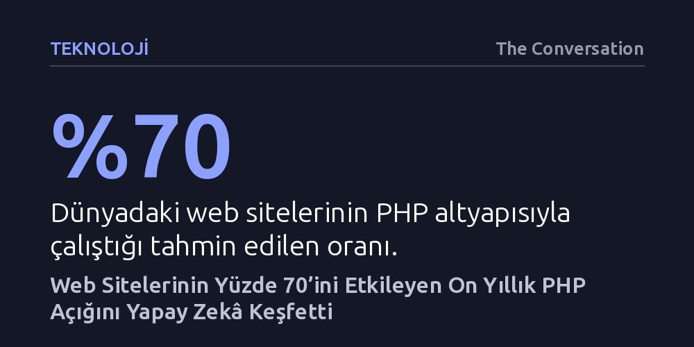

TEKNOLOJI · The Conversation · 2026-10-24
Yapay zekâ destekli güvenlik araştırmacıları, dünyadaki web sitelerinin yüzde 70'ini çalıştıran PHP çekirdeğinde on yıldır gizlenen kritik bir açık keşfetti. Ancak yama yayımlanmadan sızdırılan açık nedeniyle korsanlar, savunmasız sunucuları ele geçirmek için küresel çapta saldırı başlattı.
Yapay zekânın yazılımlardaki gizli açıkları insanlardan çok daha hızlı bulabilmesi, aynı teknolojinin saldırganlarca da otomatik bir silaha dönüştürüleceği yeni ve kontrolü güç bir siber yarış başlatıyor.

İnternet kullanıcılarının her gün ziyaret ettiği haber sitelerinden kamu kurumlarına, üniversitelerden hastane portallarına kadar modern web dünyasının yaklaşık yüzde 70'i sunucu tarafında PHP programlama diliyle çalışıyor. PHP, tekil sitelerin kendi işlevlerini yerine getiren özel betikler ile dilin motorunu ve çalışma zamanı kütüphanelerini barındıran çekirdek sistem olmak üzere iki temel katmandan meydana geliyor. Karşı karşıya kalınan son krizin odağında ise belirli bir web sitesi geliştiricisinin yaptığı münferit bir kodlama hatası değil, tüm bu sitelerin üzerine inşa edildiği çekirdek sistem yer alıyor.
Bu durum, yamalanmamış bir PHP sürümü kullanan her sistemin doğrudan savunmasız kaldığı anlamına geliyor. Web siteleri internete açık olduğundan, saldırganlar otomatik tarama araçlarıyla PHP tabanlı platformları kolaylıkla saptayabiliyor. 21 Ekim 2026 itibarıyla dünya genelindeki hükümetlerin, istihbarat kurumlarının ve büyük teknoloji sağlayıcılarının acil güvenlik alarmları vermesine yol açan bu zafiyet, tek bir şirketle sınırlı kalmayıp küresel internet altyapısını tehdit ediyor.
Güvenlik camiasında "PHP2Shell" olarak adlandırılan bu açık, adını saldırganlara sağladığı yetkiden alıyor. Sıradan bir ziyaretçi bir web sitesini gezerken yalnızca sunulan butonlar, formlar ve sayfalar üzerinden işlem yapabilir. Ancak PHP2Shell açığından faydalanan bir tehdit aktörü, web sitesinin bu dış katmanını tamamen aşarak doğrudan sunucunun işletim sisteminde "kabuk erişimi" (shell access) kazanıyor.
Kabuk erişimi, saldırganın hedef sunucuda doğrudan komut satırı üzerinden yetkisiz komutlar çalıştırabilmesi anlamına geliyor. Böyle bir sızma gerçekleştiğinde saldırganlar yalnızca sitedeki gizli verileri ele geçirmekle kalmıyor; web sitesini tümüyle kontrol edebiliyor, operasyonları kesintiye uğratabiliyor ya da ele geçirdikleri sunucuyu daha geniş kurumsal ağlara sızmak için bir basamak olarak kullanabiliyor.
Yaşanan krizi teknoloji tarihi açısından asıl çarpıcı kılan nokta, açığın tespit edilme biçimi oldu. Calif adlı siber güvenlik firmasından bir araştırmacı, OpenAI'ın gelişmiş bir yapay zekâ modelini kullanarak PHP'nin kaynak kodlarını inceledi. İnsan denetçilerin onlarca yıllık yazılım geliştirme sürecinde gözden kaçırdığı karmaşık bellek yönetimi hatası, yapay zekânın milyonlarca satırlık kodu saniyeler içinde analiz edebilen örüntü tanıma yeteneği sayesinde ortaya çıkarıldı. Söz konusu açık, PHP çekirdeğinde on yılı aşkın bir süredir fark edilmeden gizleniyordu.
Keşfin ardından araştırmacılar "eşgüdümlü ifşa" protokolüne bağlı kalarak durumu kamuoyuna açıklamadan önce doğrudan PHP geliştiricilerine bildirdi. Ancak yama hazırlıkları tamamlanıp resmi güncelleme yayımlanmadan önce açıkla ilgili teknik ayrıntılar dışarı sızdı. Amazon Web Services yetkililerinin de teyit ettiği üzere korsanlar hızla harekete geçerek yamalanmamış sistemlere karşı geniş çaplı istismar saldırıları başlattı.
Bu gelişme, yapay zekânın siber güvenlikte nasıl iki ucu keskin bir kılıç olduğunu kanıtlıyor. Güvenlik uzmanlarının zafiyetleri insan hızının çok ötesinde tespit etmesini sağlayan akıl yürütme becerileri, saldırganların elinde savunmasız hedefleri hızla tarayan ve otomatik saldırı araçları üreten bir silaha dönüşüyor. Savunma tarafı için yapay zekâyı sadece açık tespitinde değil, hızlı ve güvenli yama dağıtımında da etkin kullanmak artık zorunlu hale geliyor.
Bireysel kullanıcıların kişisel bilgisayarları açısından doğrudan bir risk bulunmuyor; zira PHP yalnızca uzak web sunucularında çalışan bir yazılım. Ancak WordPress gibi yaygın içerik yönetim sistemlerini kullanan küçük blog sahiplerinden büyük kamu portallarına kadar tüm web yöneticilerinin sunucu yönetim panellerini kontrol ederek PHP sürümlerini derhal yamalı en güncel sürüme yükseltmeleri hayati önem taşıyor.